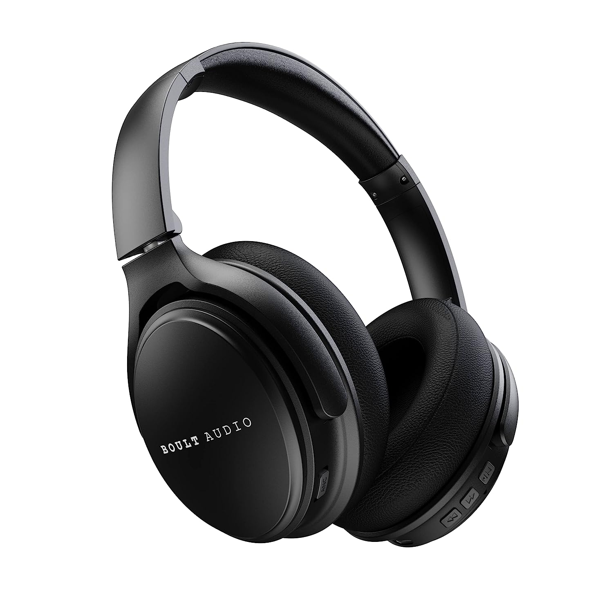
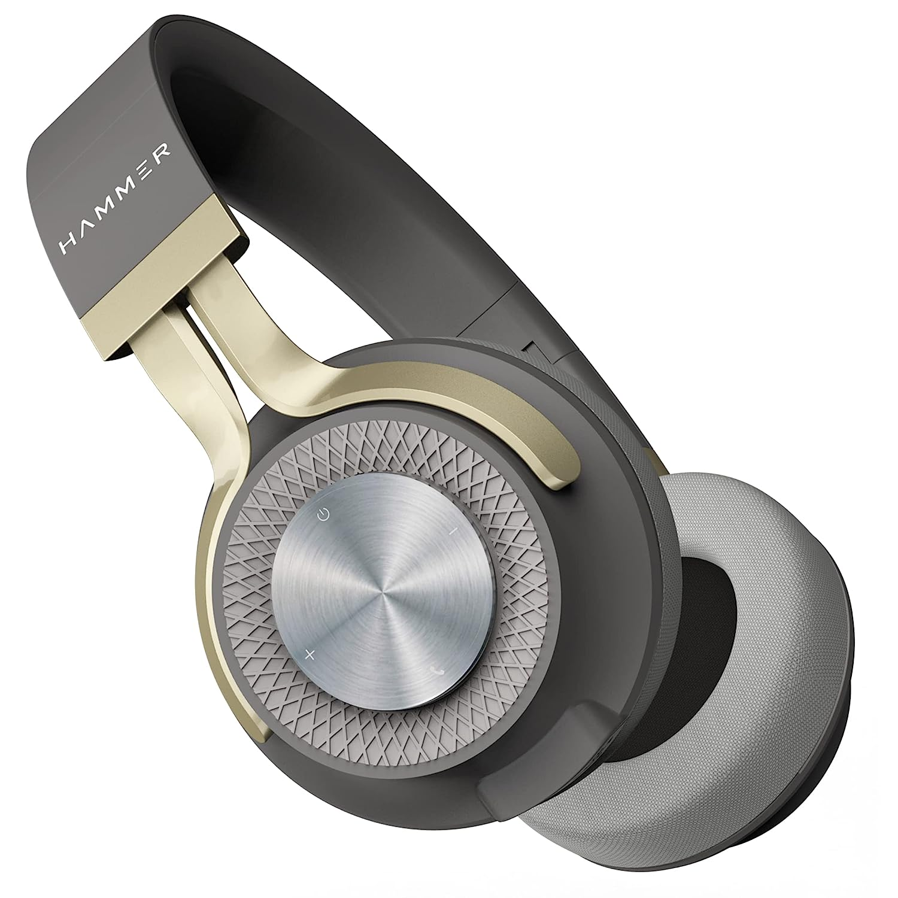
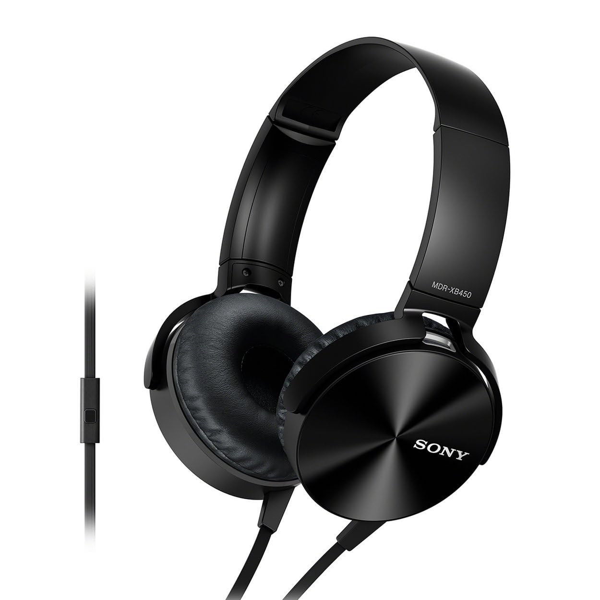
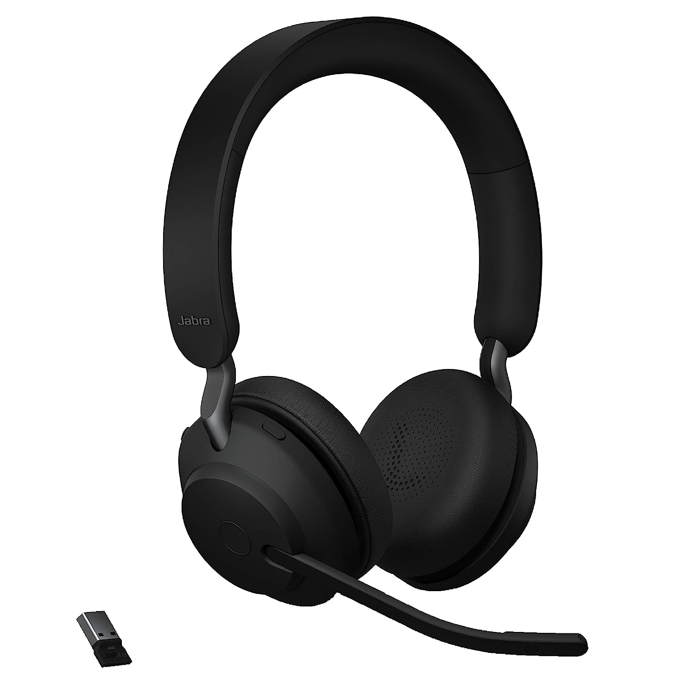
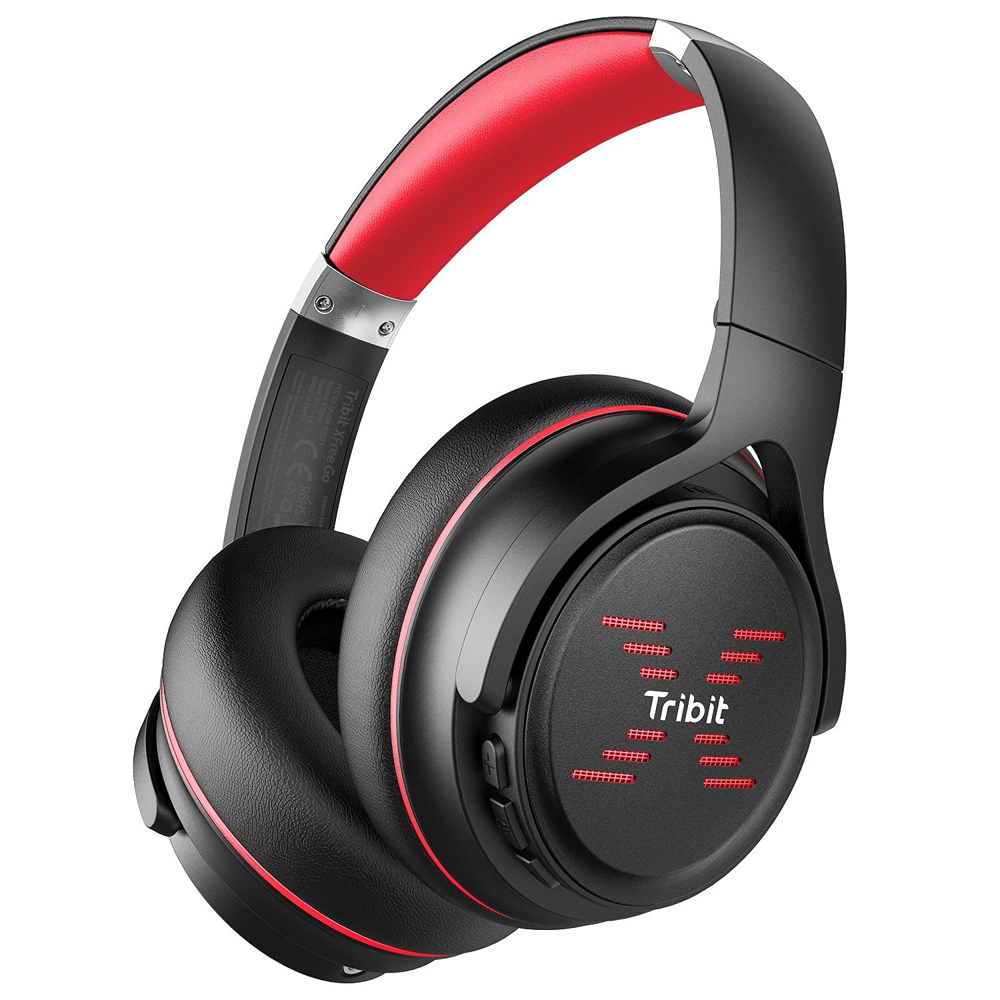
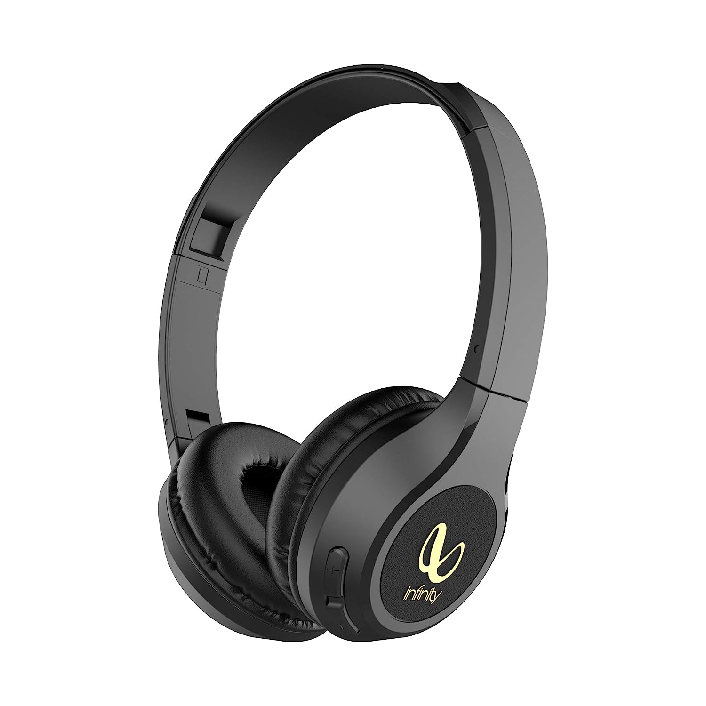
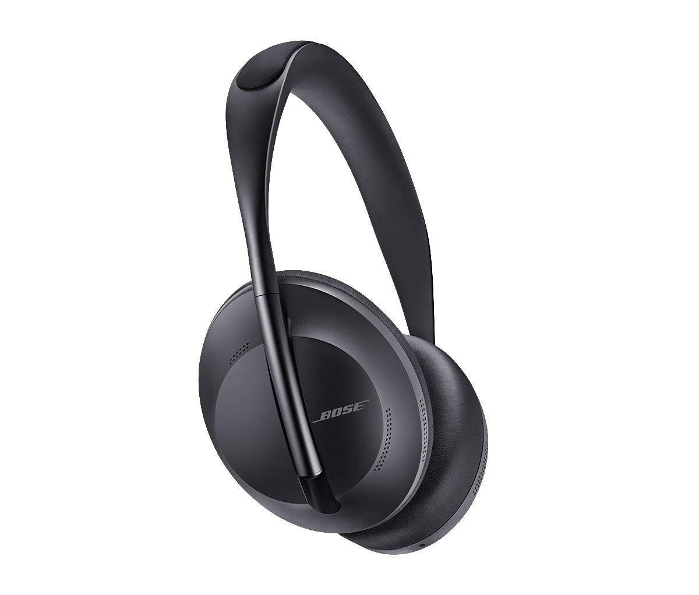
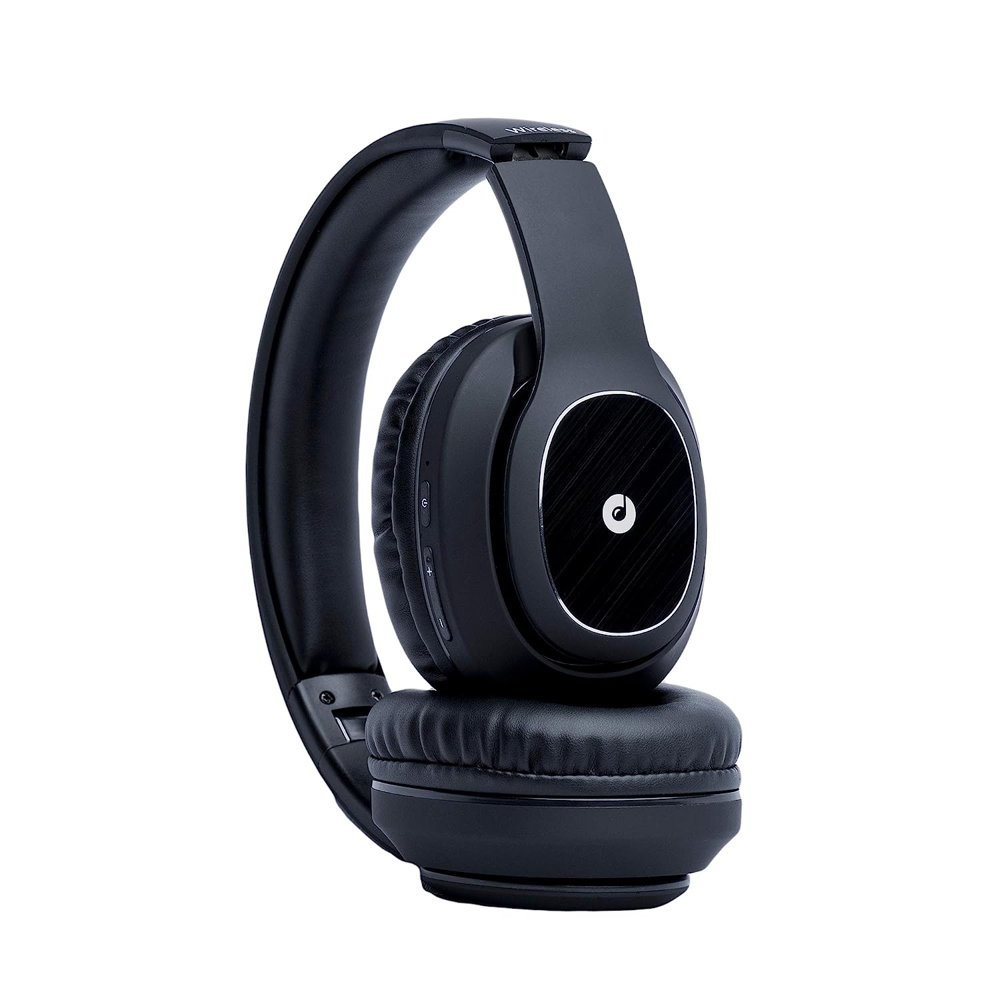

Ambrane RangerZ 2-in-1 Wireless Headphones with Mic + Speakers
hi
helli
| Features |
| 40mm Drivers with BoostedBass |
| Bluetooth V5.1 |
| 180° Rotatable |
| AUX & SD Card Support |
| Smart Buttons |
|
Pros / Advantages
|
Cons / Disadvantages
|
| Good sound quality. |
Bad build and very weak |
| Premium feel. |
The charging last for only 1 hour after a few months of use |
| Excellent battery life |
Bass quality is not good |

Boult Audio Probass Anchor Active Noise Cancellation Bluetooth Wireless Over Ear Headphones
hi
helli
| Features |
| ANC |
| 30 Hr Playtime |
| Voice assistant |
| Extra Bass |
| Comfort Fit |
| Superior Gaming Experience |
|
Pros / Advantages
|
Cons / Disadvantages
|
| Great build quality (plastic build) |
Wired audio break with anc mode while running |
| Battery life |
Mic quality okkish |
| ANC amazing |
Micro usb |
| Have slider for anc on off no need to switch on the headphones |
Not for pure bass lovers |

Hammer Bash 2.0 Over The Ear Wireless Bluetooth Headphone
hi
helli
| Features |
| Sweatproof |
| Foldable |
| Big Battery |
| Super Comfy Design |
| Bluetooth v5.0 |
| Deep bass |
| HD Sound |
| Combo of Aux Cable |
|
Pros / Advantages
|
Cons / Disadvantages
|
| Beautiful looking headphones with great bass and sound quality. |
The battery backup is not so good (7-8 hours). |
| Wired 3.5mm jack comes along with the package with mic. And the jack is also pretty long. |
Wired audio break with anc mode while running |
| Good quality packaging. |
Mic quality okkish |
| Looks and feels premium. |
Not for pure bass lovers |

Sony Extra Bass MDR-XB450AP On-Ear Wired Headphones
hi
helli
| Features |
| Noise cancelling |
| Water Resistant |
| BLuetooth & Aux Cable enabled Headphone |
| Padded Cushioning |
| Deep Bass |
| Voice Assistant |
| Tangle free cord |
|
Pros / Advantages
|
Cons / Disadvantages
|
| The sound quality is very good in this range. |
Bass is not nice |
| Bluetooth connectivity is quite exceptional. |
Battery is not exceptional |

Jabra Evolve2 65 Link380a MS Bluetooth Wireless On Ear Headphone
hi
helli
| Features |
| Microphone |
| Wireless |
| Bluetooth 5.0 |
| Built-In Mic |
| 35 hours of battery life |
| A 10-minute quick charge with the Type-C cable will give you up to 90 minutes of play. |
|
Pros / Advantages
|
Cons / Disadvantages
|
| Battery life is very good. |
Produce echo when you on a call (sometimes). |
| Sound quality also nice. |
Music is multitimes PAUSE by automatically. |

Tribit XFree Go Headphones with Mic
hi
helli
| Features |
| Wireless Bluetooth Headphone |
| HiFi Sound |
| Deep Bass |
| Lightweight |
| Type-C Lightening Fast Charge |
| Voice Control |
| Battery still works perfectly. |
| Sound quality is very good. |
| Noise cancellation is awesome. |
|
Pros / Advantages
|
Cons / Disadvantages
|
| Well built tuff case |
Wired audio break with anc mode while running |
| Great build quality (plastic build) |
Mic quality okkish |
| Battery life |
Micro usb |
| ANC amazing |
Not for pure bass lovers |

Infinity JBL Glide 510
hi
helli
| Features |
| 72 Hrs Playtime with Quick Charge |
| Wireless On Ear Headphone with Mic |
| Deep Bass |
| Dual Equalizer |
| Bluetooth 5.0 with Voice Assistant Support |
|
Pros / Advantages
|
Cons / Disadvantages
|
| It has a long lasting battery as about 72hrs |
Micro usb |
| This thing is a beast regarding bass and sound quality |
Produce echo when you on a call (sometimes). |
| Its just great because its version 5.0 and provide greater range even after. |
Bass quality is not good |

Bose Noise Cancelling 700 Bluetooth Wireless Over Ear Headphones
hi
helli
| Features |
| Noise Cancelling |
| Bluetooth |
| 4 Mic |
| Mounting Hardware |
| USB Charging Cable |
| Audio Cable |
|
Pros / Advantages
|
Cons / Disadvantages
|
| ANC is awesome. |
Become uncomfortablein wind. |
| Sound quality is pretty good |
Wired audio break with anc mode while running |

Melomane Melophones Opera Upto 24Hrs Playback,40Mm Drivers,
Soft Padded Ear Cushions & Physical Noise Isolation Bluetooth Wireless Over The Ear Headphones
hi
helli
| Features |
| Ultra Comfortable in wearing (Soft Earcups) |
| 400 mAh Lithium Big Battery (Standby Time 120 Hours) |
| 40mm HD Sound |
| ABS Plastic + TPE + Metal Body |
|
Pros / Advantages
|
Cons / Disadvantages
|
| Good sound quality. |
sometime feel uncomfortable |
| Excellent battery life |
Not good bass |